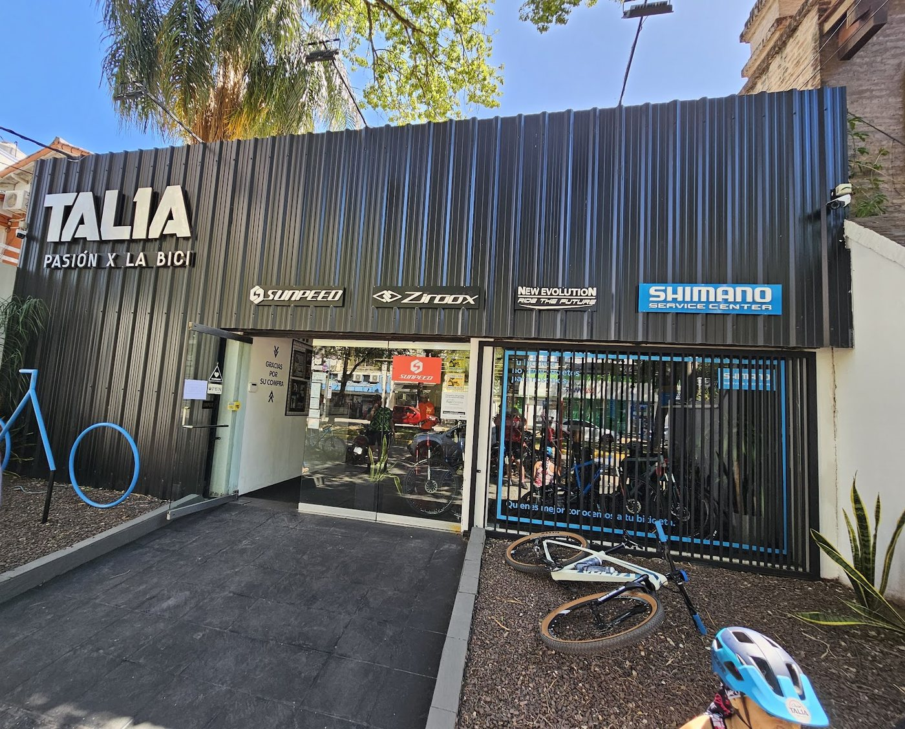

03 Historia
De la selecciónargentina aLiniers 587.
Talia Aguirre es de Las Breñas y corrió a nivel local, nacional e internacional: integró la selección argentina y compitió en Europa.
En 2016 volcó toda esa experiencia en un negocio propio y eligió Resistencia, la capital de su provincia. El primer paso fue vender su propia bici. Hoy TALIA es taller oficial, distribuidor de las mejores marcas y un lugar donde se juntan los que pedalean.

- 2016Abre TALIA en Resistencia.
- 2021La Ciudad y la Cámara de Comercio reconocen a Talia en el Mes de la Mujer.
- 2026Servicio oficial RockShox. Diez años rodando juntos.
“La dueña es muy divina, además de ser la mejor ciclista.”
Reseña en Google